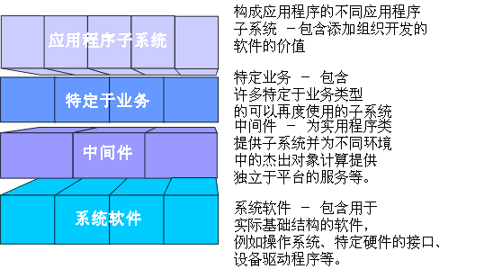

|
分层代表有序的一组功能，特定于应用程序的功能位于上层，跨应用程序领域的功能位于中层，而特定于部署环境的功能位于下层。
层的数量和组成依赖于问题域和解决方案空间的复杂程度：
-
通常只有一个特定于应用程序的层。
-
已构建过先前的系统的领域或以互操作的较小系统依次组成过大型系统的领域，都强烈需要在设计团队之间共享信息。结果，特定于业务的层可能部分存在，并为了清晰性而被构建为几个层次。
-
有中间件产品良好支持、并且其中复杂系统软件扮演较重要角色的解决方案空间将有良好开发的底层，并可能有几个中间件和系统软件层。
应将子系统组织到在体系结构上层有特定于应用程序的子系统的层中、在体系结构底层有特定于硬件和操作系统的子系统的层中以及占据中层有一般用途服务的层中。
以下是具有四层的样本体系结构：
-
顶层，即应用层，包含特定于应用程序的服务。
-
第二层，即特定于业务的层，包含特定于业务的组件，这些组件在几个应用程序中使用。
-
中间件层包含诸如 GUI 构建器、到数据库管理系统的接口和独立于平台的操作系统服务之类的组件，以及诸如电子表格和图编辑器之类的 OLE 组件。
-
底层，即系统软件层，包含诸如操作系统、数据库和到特定硬件的接口之类的组件。

分层结构通常从最常规的功能层开始，并向更特定的功能层发展。
|